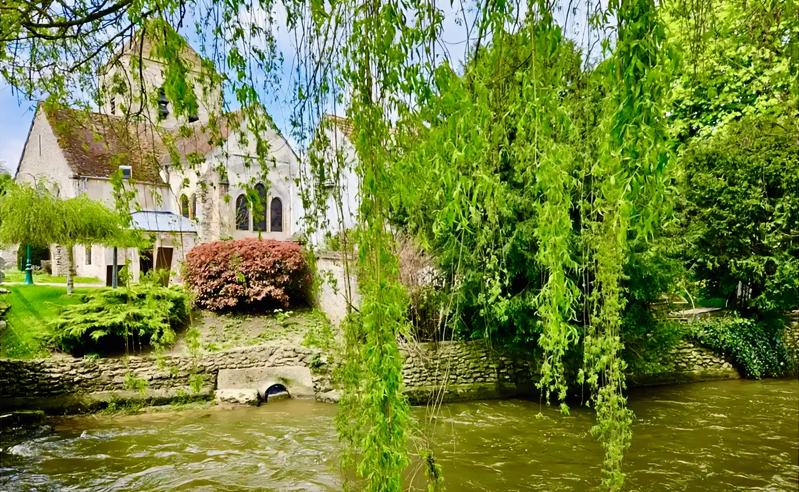
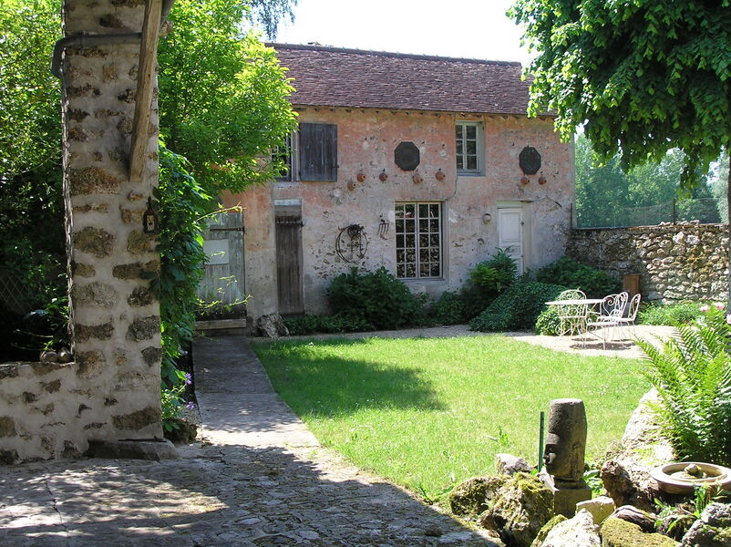
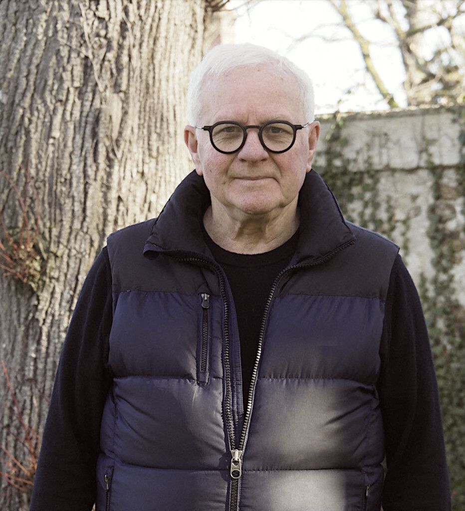

Un village entre nature et culture
Suite aux imprévus de fin d'année, les travaux autour de la mairie se poursuivent. Le chantier devrait être achevé avant l'été. Retrouvez le détail des interventions prévues dans cet article.
Niché dans la vallée du Morin, Saint-Cyr-sur-Morin est un village de Seine-et-Marne qui mêle patrimoine rural authentique et cadre de vie paisible à moins d'une heure de Paris.
Fontaines sculptées, moulins, randonnées le long du Grand Morin, Musée de la Seine-et-Marne… la commune cultive son identité tout en se tournant vers l'avenir.
Découvrir le village →


"En cette fin d'année, la commune continue à mettre en œuvre ses projets de travaux. Nous avançons ensemble, avec le souci constant du bien-vivre de toutes les Saint-Cyriennes et de tous les Saint-Cyriens."